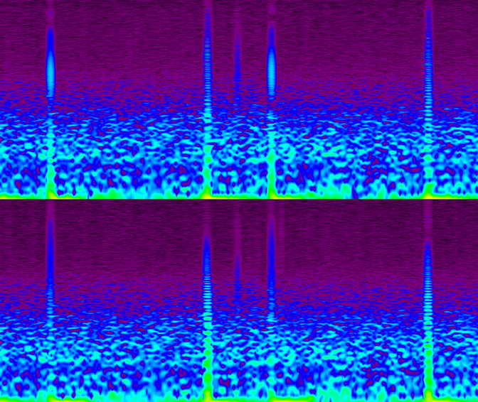
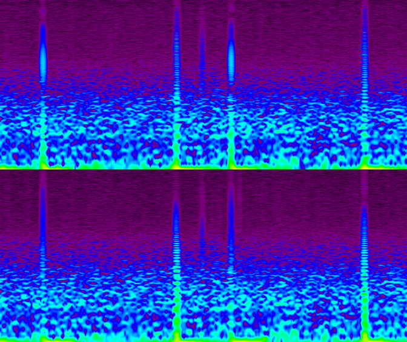
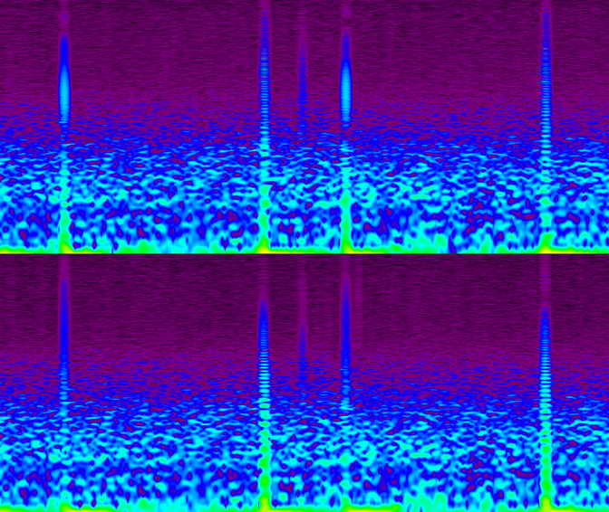

The audio was distorted at the recording and sounds very saturated.
Waveform does not look "squared", but show very limited dinamic range
and additional frequencies at the waveform peaks. Spectragram shows
more harmonics than expected in a speach recording. Back to top of the page
1CL0065860 - Cracked
Surface of the disk.
Regular clicks in the audio.
Two out of phase clicks appear at regular intervals and are clearly
heard and visible. Clicks have wide frequency spectrum.
 Back to top of the page
1CL0065854 - Shellac
disk surface noise.
The surface noise on shellac disc sounds like continuous
frying/sizzling noise. It is the result of the addition of abrasive
fillers like emery powder which were used to provide resistance to wear
from heavy pickups.
The noise consists of the series of small irregular clicks visible on
the zoomed in section of the waveform and has typical “fire-like”
spectrogram appearance. Back to top of the page
1CL0066809 - Worn out
groove.
Distortion accuring due to excessive wear of the groove.The distortion
is visible on the zoomed in section of the waveform and has specific
frequency blueprint. Back to top of the page
Open reel and compact
cassette
C1163/87 - Changes in
speed on open reel tape.
The first audio clip recorded at normal speed. In the second clip the
tape is sped up and then slowed down.
Speed variations are difficult to see in the waveform view. Spectrogram
on the other hand is very useful for detecting gradual changes in pitch.
C1829/864 - Pitch
increase towards end of the tape caused by battery failure
The first audio clip recorded at normal at the beginning of the tape.
Towards the end of the tape the recorder battery is almost empty, which
results in tape speed decrease. When played back on a normal playback
machine the audio appears to be sped up.
9kHz frequency tone at the normal speed recording is an artifact
probably introduced by a a recording machine or radio interference.
Tracing this tone in the spectogram of the second audio allows to
follow the speed increase. Back to top of the page
C1734/275 - Tape
flutter.
The first audio clip recorded at normal speed. In the second clip the
tape is sped up and then slowed down.
Speed variations are difficult to see in the waveform view. Spectrogram
on the other hand is very useful for detecting gradual changes in pitch. Back to top of the page
C43/14 - Tone
inerference on open reel tape.
Two tones aproximately 16kHz and 38kHz are clearly visible in the
spectogram. The recording was made in 1983 in theatre
"in-house system". It was transferred in 2000 on Studer player.
The exact nature of the interference is not documented, but it is
likely that 38kHz tone is introduced by the Studer A807 or A810 digital
interface. It is well outside human hearing range.
The second tone was probably added at the recording stage and it is
likely 15.625kHz line scan frequency interference from nearby TV. Back to top of the page
C613/88/15 - Buzzing
noise and feedback on compact cassette.
Live recording with loud noise that sounds like amplified recording
equipment. Audio and zoomed out waveform show that the noise increases
in volume, when there is no modulation. This indicates that the noise
is the result of microphone feedback.
Spectrogram shows the footprint of the noise. Zoomed section of
waveform shows repetitive noise pattern. Back to top of the page
C613/79 - Hiss and
hum.
Waveform shows loud noise floor.
Low frequency hum and high frequency hiss are clearly visible in
spectrogram and zoomed out waveform.
Electrical buzzing noise extended to high frequencies is likely to be a
result of interference or faulty electrical equipment.
The noise is harmonic, which can be seen as multiple thin lines at the
high end of the spectrogram. It can also be seen in the zoomed-in
waveform as irregular series of short high frequency signals.
Two loud clicks are clearly heard and seen in the waveform view. They
occupy the full frequency spectrum.
Zoomed waveform view of one of the clicks shows consistent changes in
level therefore it is unlikely to be a dropout, whereas, the group of
samples at 0dB indicating digital distortion.
Damaged section of DAT tape that cannot be
interpolated by DAC algorithm is often replaced by digital silence. It
is clearly audible and can be seen in both waveform and spectrogram
views.
Loss of samples during transfer. Can occur due to operating system
background tasks, audio driver and recording software problems, etc.
Dropout are very short in duration and can’t be seen in zoomed out
waveform view. In zoomed in view the drop out looks like sharp level
change between two samples. Although only small number of samples are
usually lost due to dropout, the sharp change results in broadband
click seen in the spectrogram.


 
